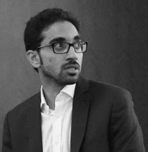

I am a Postdoctoral Research Associate at the University of Tennessee, Knoxville’s Innovative Computing Laboratory. I work with Jack Dongarra on developing numerical software libraries for solving linear algebra problems at scale, as part of the Software for Linear Algebra Targeting Exascale (SLATE) and Matrix Algebra on GPU and Multicore Architectures (MAGMA) projects.
I received PHD'19 and MS'13 in Computer Science from King Abdullah University of Science and Technology's Extreme Computing Research Center. I worked with David E. Keyes on developing performance-centric algorithms for high performance computing. I defended my dissertation on optimizing unstructured computations on emerging architectures to a committee consisting of David E. Keyes (Chair, Applied Mathematics and Computational Science, KAUST), Mikhail Moshkov (Applied Mathematics and Computational Science, KAUST), Hakan Bagci (Electrical Engineering, KAUST), Markus Hadwiger (Computer Science, KAUST), and Edmond Chow (Computational Science and Engineering, Georgia Tech).
In a previous life, I was a software engineer at Saudi Electricity Company and Saudi Aramco, where I was fortunate to work on various large-scale corporate applications, e.g., database management systems, automations, scheduling, operating systems, and enterprise resource planning systems.
Before that, I received BS'12 in Computer Science from King Faisal University's College of Computer Sciences & Information Technology.